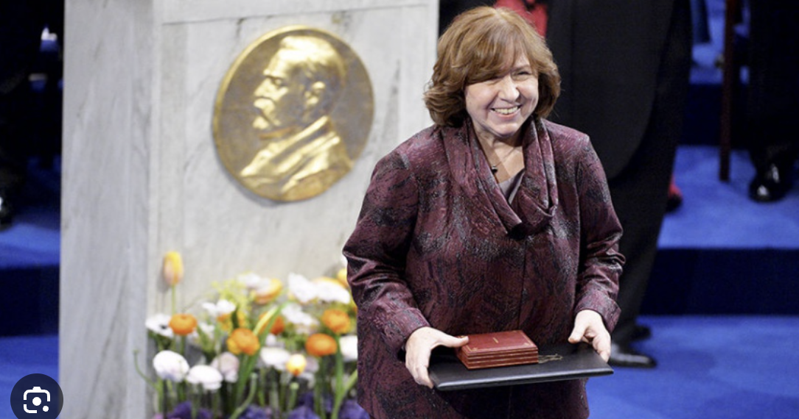

Svetlana Aleksievich
The Unwomanly Face of War

Fig.1 - Aleksievich speaks at the Nobel banquet (2015)
Svetlana Aleksievich. The Unmomanly Face of War (1985 and 2017 editions (censorship and self-censorship))
- Gendered memory of war
- Oral histories vs. one single coherent narrative
- Antimonumentalist memory of war
- Individual memory of war